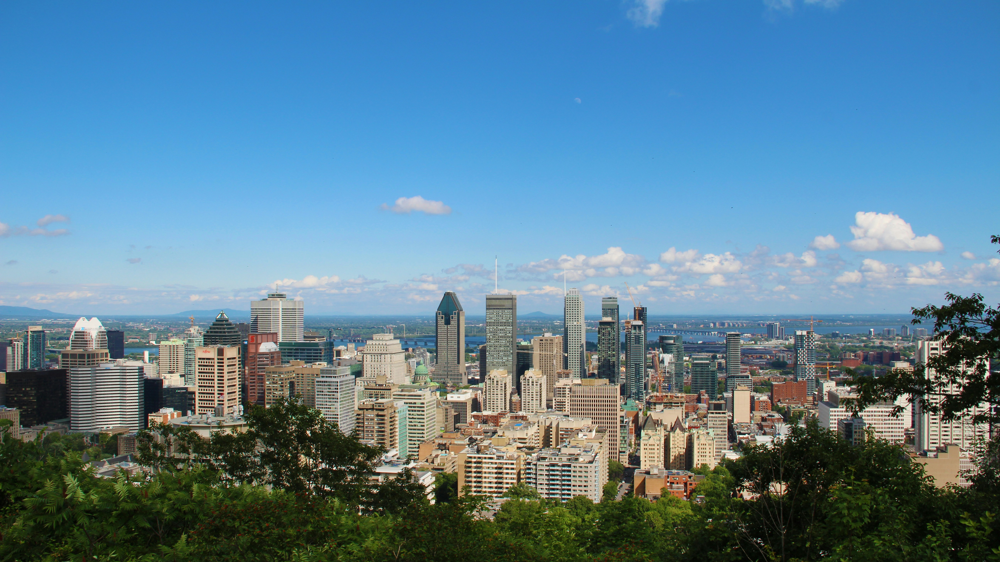

Problem & Community
How we identified the right problem, and why community shaped every decision we made.
The Accessibility Gap in Urban Navigation
Montreal is home to over 200,000 residents with mobility impairments. While the city has invested in accessible infrastructure, existing navigation tools were not designed with mobility-impaired users' daily reality in mind.
Standard mapping tools, such as Google Maps and Apple Maps, route pedestrians based on distance and travel time. They have no concept of ground-level conditions: whether a sidewalk is cracked, whether a ramp is actually navigable, whether a construction zone has closed the only accessible path through a block.
The result is a navigation experience that fails people with mobility impairments in ways the tools cannot even measure or report on. Users must rely on memory, word-of-mouth, or trial and error.
Urban Access addresses this gap directly: by integrating computer vision and street-level imagery into the routing layer, it gives users a route recommendation that reflects the actual, present-day state of Montreal's sidewalks and not an idealised map.

What Standard Maps Miss
Surface Quality
Cracked pavement, cobblestones, and uneven surfaces are passable for some aids and impassable for others. Maps treat all pedestrian paths as equivalent.
Gradient & Elevation
Steepness matters enormously for manual wheelchair and mobility scooter users. A route that looks short on a map may be physically exhausting or unsafe.
Construction Zones
Temporary construction can close the only accessible path through a block for months. This information is not reflected in standard navigation tools in real time.
Winter Conditions
Montreal winters make snow and ice accumulation a serious seasonal barrier. Accessible routes in summer may become impassable in January.
Aid-Specific Needs
A route suitable for a walking cane may be impassable for an electric wheelchair. Each mobility aid has different requirements — and existing tools treat all pedestrians identically.
Pedestrian Safety
Intersection design, signal timing, and crossing hazards affect mobility-impaired users disproportionately but are not factored into standard route recommendations.
Community Consultation
Meaningful community engagement was central to Urban Access from day one. The system's focus, categories, and outputs were shaped by people with direct lived experience of accessibility barriers — not assumed by the team.
Rashid Mushkani
Urban Planning & AI Researcher
Rashid provided the conceptual grounding for our routing focus. His key insight, that accessibility must be continuous, not just at destinations — shifted our approach entirely. A fully accessible government building is effectively inaccessible if the sidewalk leading to it is not. This directly shaped our decision to build a route recommendation system rather than a static accessibility map.
He also suggested reaching out to other community organizations, which expanded our survey distribution significantly.
Laurence Parent
Plateau-Mont-Royal Borough Councillor
Laurence provided ongoing iterative feedback throughout the project's development.
Her engagement constituted a form of continuous, community-grounded validation from a policy and lived-experience perspective.
Privacy as a Design Principle
Ethical data practices, from anonymised survey data to user account deletion and secure Supabase storage, are documented in full on the Ethics page.
Next: How we built the ML pipeline: dataset, training, and validation
ML Pipeline →